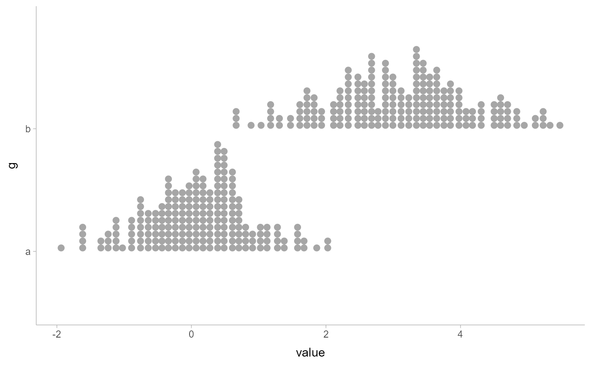
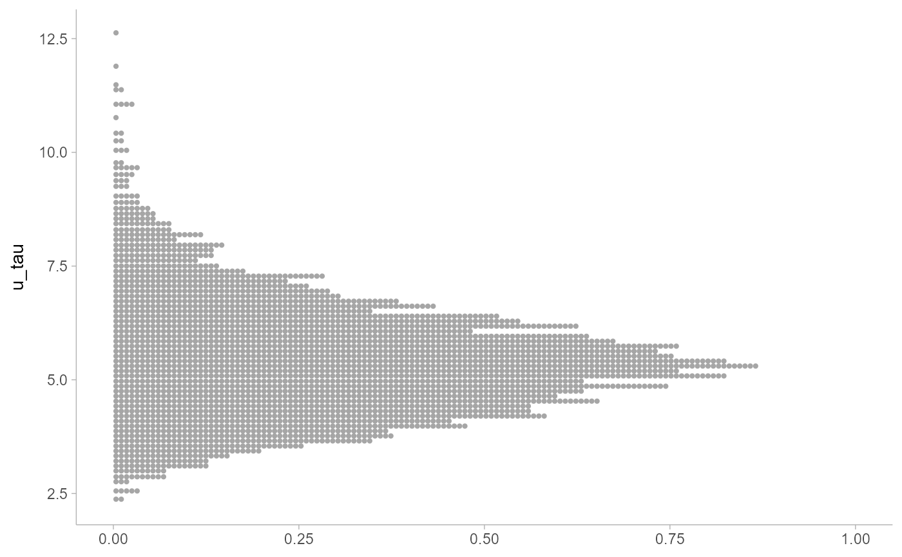
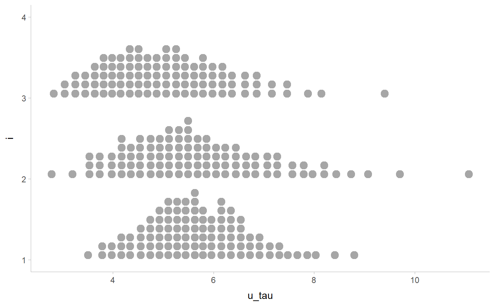
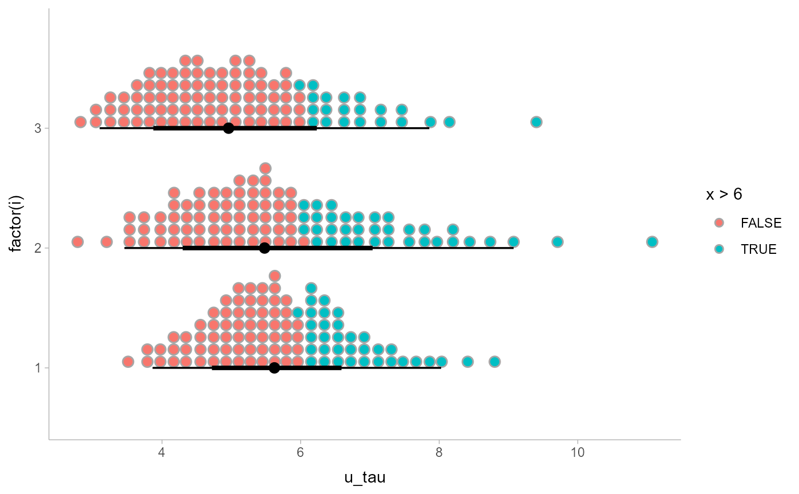

R/geom_dotsinterval.R, R/stat_dotsinterval.R
geom_dotsinterval.RdGeoms and stats for creating dotplots that automatically determines a bin width that
ensures the plot fits within the available space. Also ensures dots do not overlap, and allows
generation of quantile dotplots using the quantiles argument to stat_dotsinterval/stat_dots
and stat_dist_dotsinterval/stat_dist_dots. Generally follows the naming scheme and
arguments of the geom_slabinterval() and stat_slabinterval() family of
geoms and stats.
geom_dotsinterval( mapping = NULL, data = NULL, stat = "identity", position = "identity", ..., dotsize = 1, stackratio = 1, binwidth = NA, na.rm = FALSE, show.legend = NA, inherit.aes = TRUE ) geom_dots( mapping = NULL, data = NULL, stat = "identity", position = "identity", ..., na.rm = FALSE, show.legend = NA, inherit.aes = TRUE ) stat_dotsinterval( mapping = NULL, data = NULL, geom = "dotsinterval", position = "identity", ..., quantiles = NA, point_interval = median_qi, na.rm = FALSE, show.legend = c(size = FALSE), inherit.aes = TRUE ) stat_dots( mapping = NULL, data = NULL, geom = "dots", position = "identity", ..., show.legend = NA, inherit.aes = TRUE ) stat_dist_dotsinterval( mapping = NULL, data = NULL, geom = "dotsinterval", position = "identity", ..., quantiles = 100, na.rm = FALSE, show.legend = c(size = FALSE), inherit.aes = TRUE ) stat_dist_dots( mapping = NULL, data = NULL, geom = "dots", position = "identity", ..., show.legend = NA, inherit.aes = TRUE )
| mapping | Set of aesthetic mappings created by |
|---|---|
| data | The data to be displayed in this layer. There are three options: If A A |
| stat | The statistical transformation to use on the data for this layer, as a string. |
| position | Position adjustment, either as a string, or the result of a call to a position adjustment function. |
| ... | Arguments passed on to sideWhich side to draw the slab on. scaleWhat proportion of the region allocated to this geom to use to draw the slab. If orientationWhether this geom is drawn horizontally ( justificationJustification of the interval relative to the slab, where normalizeHow to normalize heights of functions input to the interval_size_domainThe minimum and maximum of the values of the size aesthetic that will be translated into actual
sizes for intervals drawn according to interval_size_rangeThis geom scales the raw size aesthetic values when drawing interval and point sizes, as
they tend to be too thick when using the default settings of fatten_pointA multiplicative factor used to adjust the size of the point relative to the size of the
thickest interval line. If you wish to specify point sizes directly, you can also use the show_slabShould the slab portion of the geom be drawn? Default show_pointShould the point portion of the geom be drawn? Default show_intervalShould the interval portion of the geom be drawn? Default |
| dotsize | The size of the dots relative to the bin width. The default, |
| stackratio | The distance between the center of the dots in the same stack relative to the bin height. The
default, |
| binwidth | The bin width to use for drawing the dotplots. The default value, |
| na.rm | If |
| show.legend | logical. Should this layer be included in the legends?
|
| inherit.aes | If |
| geom | Use to override the default connection between
|
| quantiles | For the |
| point_interval | A function from the |
A ggplot2::Geom or ggplot2::Stat representing a dotplot or combined dotplot+interval geometry which can
be added to a ggplot() object.
The dots geoms are similar to geom_dotplot() but with a number of differences:
Dots geoms act like slabs in geom_slabinterval() and can be given x positions (or y positions when
in a horizontal orientation).
Given the available space to lay out dots, the dots geoms will automatically determine how many bins to use to fit the available space.
Dots geoms use a dynamic layout algorithm that lays out dots from the center out if the input data are symmetrical, guaranteeing that symmetrical data results in a symmetrical plot. The layout algorithm also prevents dots from overlapping each other.
The shape of the dots in a in these geoms can be changed using the slab_shape aesthetic (when using the
dotsinterval family) or the shape or slab_shape aesthetic (when using the dots family)
The stat_... and stat_dist_... versions of the stats when used with the quantiles argument
are particularly useful for constructing quantile dotplots, which can be an effective way to communicate uncertainty
using a frequency framing that may be easier for laypeople to understand (Kay et al. 2016, Fernandes et al. 2018).
These stats support the following aesthetics:
x
y
datatype
thickness
size
group
In addition, in their default configuration (paired with geom_dotsinterval()) the following aesthetics are supported by the underlying geom:
slab_shape
datatype
alpha
colour
linetype
fill
shape
stroke
point_colour
point_fill
point_alpha
point_size
size
interval_colour
interval_alpha
interval_size
interval_linetype
slab_size
slab_colour
slab_fill
slab_alpha
slab_linetype
y
ymin
ymax
x
xmin
xmax
width
height
thickness
group
See examples of some of these aesthetics in action in vignette("slabinterval").
Learn more about the sub-geom aesthetics (like interval_color) in the scales documentation.
Learn more about basic ggplot aesthetics in vignette("ggplot2-specs").
Kay, M., Kola, T., Hullman, J. R., & Munson, S. A. (2016). When (ish) is My Bus? User-centered Visualizations of Uncertainty in Everyday, Mobile Predictive Systems. Conference on Human Factors in Computing Systems - CHI '16, 5092--5103. doi: 10.1145/2858036.2858558 .
Fernandes, M., Walls, L., Munson, S., Hullman, J., & Kay, M. (2018). Uncertainty Displays Using Quantile Dotplots or CDFs Improve Transit Decision-Making. Conference on Human Factors in Computing Systems - CHI '18. doi: 10.1145/3173574.3173718 .
See stat_sample_slabinterval() and stat_dist_slabinterval() for families of other
stats built on top of geom_slabinterval().
See vignette("slabinterval") for a variety of examples of use.
library(dplyr)#> #>#> #> #>#> #> #>library(ggplot2) data(RankCorr_u_tau, package = "ggdist") # orientation is detected automatically based on # which axis is discrete RankCorr_u_tau %>% ggplot(aes(x = u_tau)) + geom_dots()# stat_dots can summarize quantiles, creating quantile dotplots RankCorr_u_tau %>% ggplot(aes(x = u_tau, y = i)) + stat_dots(quantiles = 100)# color and fill aesthetics can be mapped within the geom # dotsinterval adds an interval RankCorr_u_tau %>% ggplot(aes(x = u_tau, y = i, fill = stat(x > 6))) + stat_dotsinterval(quantiles = 100)